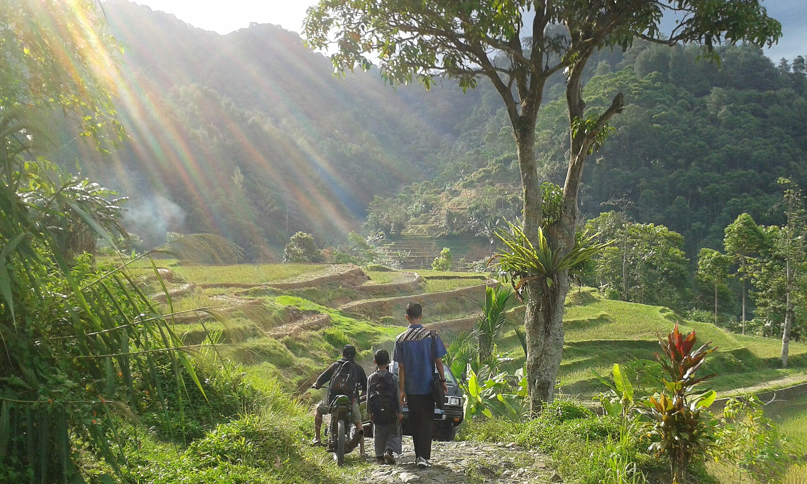
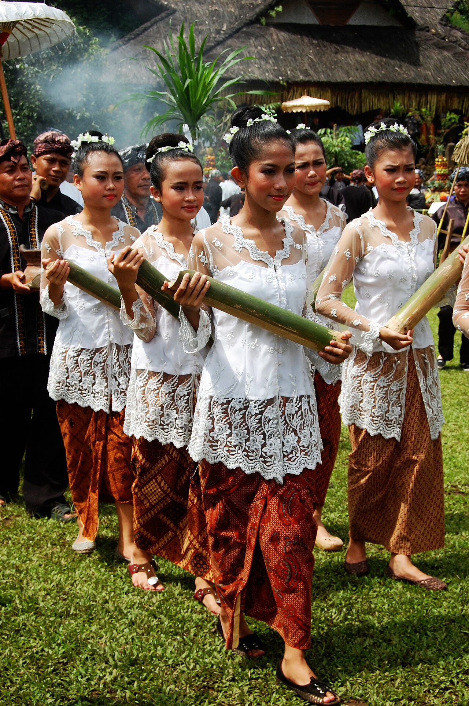
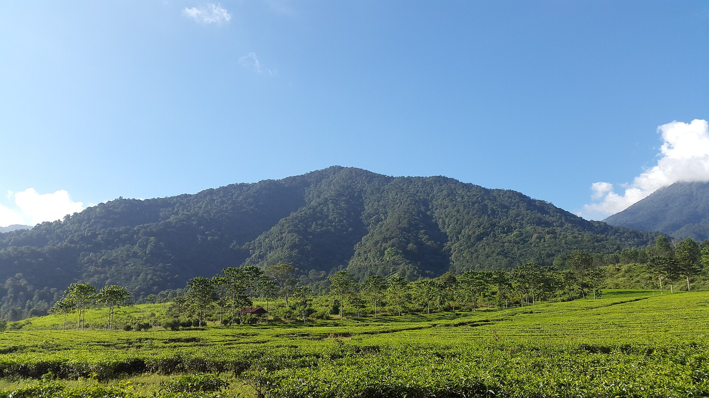

Seren Taun
Syukur atas panen padi, lengkap dengan arak-arakan tumpeng dan kesenian.
Menginap di rumah warga, menanam padi, dan belajar adat Sunda di desa-desa wisata Kabupaten Bogor.


Bogor menyimpan hutan pegunungan dan tradisi Sunda yang masih hidup. Pilih salah satu, atau nikmati keduanya dalam satu kunjungan.
 Kecamatan Nanggung
Kecamatan NanggungEkowisata di kawasan Taman Nasional Gunung Halimun Salak, dengan sawah terasering dan adat Sunda Wiwitan.
 Kecamatan Cisarua
Kecamatan CisaruaHutan pinus, air terjun berundak, dan program adopsi pohon.
 Kecamatan Ciampea
Kecamatan CiampeaTebing karst Gunung Kapur dan keseharian masyarakat agraris.
Kecamatan CisaruaKawasan Puncak dengan kebun teh, telaga, dan olahraga udara.
Silih asah, silih asih, silih asuh.
Saling mengasah ilmu, saling menyayangi, saling menjaga. Pegangan hidup orang Sunda ini juga cara desa-desa kami menyambut tamu.
Syukur atas panen padi, lengkap dengan arak-arakan tumpeng dan kesenian.
Alat musik bambu yang dimainkan bersama. Setiap orang memegang satu nada.
Seni bela diri berpadu kendang, tampil dalam penyambutan dan pesta rakyat.
Makan bersama di atas daun pisang, tanpa meja dan tanpa jarak.
Kriya warga yang bisa dipelajari langsung dalam workshop desa.
Seluruh pendapatan kembali ke Pokdarwis dan dana lestari lingkungan desa.

Pelataran Adat Kasepuhan Malasari
Upacara tahunan sebagai tanda syukur atas hasil tani: arak-arakan dongdang tumpeng, kendang pencak silat, Tari Renggong, dan angklung.
Penyelenggara: Masyarakat Adat Malasari dan Disparbud
Hutan pinus dan Sungai Ciherang, Batulayang
Balap tubing, pameran kriya akar pohon, penanaman 1.000 bibit damar, dan konser akustik di malam yang dingin.
Penyelenggara: Pokdarwis Batulayang Raya
Kebun teh lereng Gunung Mas, Tugu Selatan
Jalan santai 5 km menembus kabut kebun teh, disusul kejuaraan seduh kopi robusta oleh 30 barista desa binaan.
Penyelenggara: Forkom Deswita Bogor dan Asosiasi Petani
Pokdarwis, pengelola homestay, dan pegiat desa bisa bergabung untuk pelatihan, sertifikasi, dan promosi bersama.